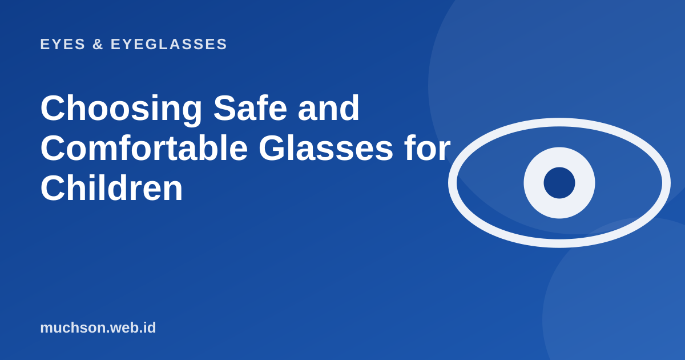

Home › Articles › Eyes & Eyeglasses
Eyes & EyeglassesChoosing Safe and Comfortable Glasses for Children
Children's glasses must be strong, light and well fitted, and they must be something your child is willing to wear. The right choice is not the most expensive one, but the one that suits your child's face and habits.

What matters most: fit and comfort
Text description of the diagram
- 1. A good fit: Lenses sit right in front of the eyes and do not slip
- 2. Flexible, light material: TR90, silicone or flexible plastic
- 3. Impact-resistant lenses: Polycarbonate or a similar material
- 4. A style your child likes: A child who likes them will wear them
Checklist for choosing
Getting your child to wear them
- Let your child help pick the model.
- Explain the purpose in simple words: it is for seeing the board, not a punishment.
- Let them adjust gradually over the first few days.
- Set an example: adults who wear glasses with a positive attitude.
- Give a small reward for wearing them consistently.
Care and check-ups
| Item | Recommendation |
|---|---|
| Eye exams | Every 6-12 months or as the doctor advises |
| Frame adjustment | Regularly, especially as your child grows |
| Spare glasses | Consider them if the prescription is high or your child is very active |
| Cleaning | Teach your child to clean with a microfibre cloth, not a shirt |
Keep in mind
Glasses that do not fit can slip, so your child looks through the wrong part of the lens, or takes them off because they are uncomfortable. Regular adjustment at the optical shop often solves this.
FAQ
Does my child need blue light lenses?
The benefit of blue light lenses has not been strongly proven. For children, healthy screen habits and time outdoors matter more.
When should children's glasses be replaced?
When the prescription changes, the frame no longer fits because of growth, or a lens is damaged. Regular check-ups help decide.
Can my child play sports in glasses?
Use a flexible frame with a retaining strap, and consider dedicated eye protection for contact sports.